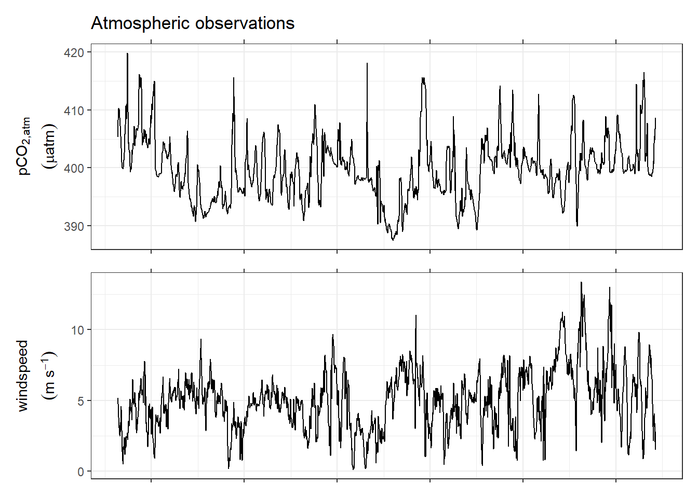
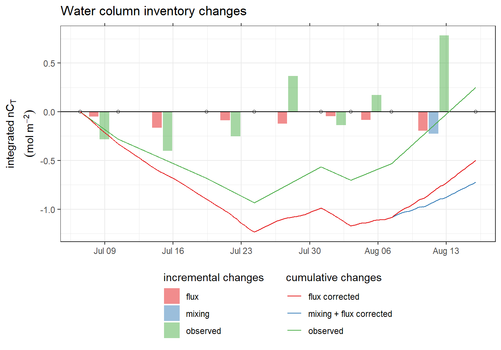

CT dynamics
Jens Daniel Müller
16 April, 2020
Last updated: 2020-04-16
Checks: 7 0
Knit directory: BloomSail/
This reproducible R Markdown analysis was created with workflowr (version 1.6.1). The Checks tab describes the reproducibility checks that were applied when the results were created. The Past versions tab lists the development history.
Great! Since the R Markdown file has been committed to the Git repository, you know the exact version of the code that produced these results.
Great job! The global environment was empty. Objects defined in the global environment can affect the analysis in your R Markdown file in unknown ways. For reproduciblity it’s best to always run the code in an empty environment.
The command set.seed(20191021) was run prior to running the code in the R Markdown file. Setting a seed ensures that any results that rely on randomness, e.g. subsampling or permutations, are reproducible.
Great job! Recording the operating system, R version, and package versions is critical for reproducibility.
Nice! There were no cached chunks for this analysis, so you can be confident that you successfully produced the results during this run.
Great job! Using relative paths to the files within your workflowr project makes it easier to run your code on other machines.
Great! You are using Git for version control. Tracking code development and connecting the code version to the results is critical for reproducibility.
The results in this page were generated with repository version 86b0833. See the Past versions tab to see a history of the changes made to the R Markdown and HTML files.
Note that you need to be careful to ensure that all relevant files for the analysis have been committed to Git prior to generating the results (you can use wflow_publish or wflow_git_commit). workflowr only checks the R Markdown file, but you know if there are other scripts or data files that it depends on. Below is the status of the Git repository when the results were generated:
Ignored files:
Ignored: .Rhistory
Ignored: .Rproj.user/
Ignored: data/Finnmaid_2018/
Ignored: data/GETM/
Ignored: data/Maps/
Ignored: data/Ostergarnsholm/
Ignored: data/TinaV/
Ignored: data/_merged_data_files/
Ignored: data/_summarized_data_files/
Ignored: output/Plots/Figures_publication/
Note that any generated files, e.g. HTML, png, CSS, etc., are not included in this status report because it is ok for generated content to have uncommitted changes.
These are the previous versions of the repository in which changes were made to the R Markdown (analysis/CT_dynamics.Rmd) and HTML (docs/CT_dynamics.html) files. If you’ve configured a remote Git repository (see ?wflow_git_remote), click on the hyperlinks in the table below to view the files as they were in that past version.
| File | Version | Author | Date | Message |
|---|---|---|---|---|
| Rmd | 86b0833 | jens-daniel-mueller | 2020-04-16 | New fixed integration depth 12m |
| html | 4ac8782 | jens-daniel-mueller | 2020-04-16 | Build site. |
| Rmd | 95380d4 | jens-daniel-mueller | 2020-04-16 | Cumulative temperature distribution on July 23 |
| html | 48631ee | jens-daniel-mueller | 2020-04-09 | Build site. |
| Rmd | 4e9464f | jens-daniel-mueller | 2020-04-09 | corrected na approx function |
| html | 849e990 | jens-daniel-mueller | 2020-04-01 | Build site. |
| Rmd | c199200 | jens-daniel-mueller | 2020-04-01 | included BloomSail data to Finnmaid analysis |
| html | f4a27b8 | jens-daniel-mueller | 2020-04-01 | Build site. |
| Rmd | b1613b7 | jens-daniel-mueller | 2020-04-01 | re-calculated MLD, renamed objects and structured site |
| html | 6302994 | jens-daniel-mueller | 2020-03-31 | Build site. |
| Rmd | 50ab313 | jens-daniel-mueller | 2020-03-31 | implemented temperature reconstruction |
| html | a6c4c22 | jens-daniel-mueller | 2020-03-30 | Build site. |
| Rmd | d8120b3 | jens-daniel-mueller | 2020-03-30 | reconstruction BloomSail surface started, merging MLD and DT approach |
| html | 80c78b3 | jens-daniel-mueller | 2020-03-30 | Build site. |
| html | 70dbfbe | jens-daniel-mueller | 2020-03-30 | Build site. |
| Rmd | e69d1f0 | jens-daniel-mueller | 2020-03-30 | cleaned object names |
| html | 431a56a | jens-daniel-mueller | 2020-03-30 | Build site. |
| Rmd | 9edf20d | jens-daniel-mueller | 2020-03-30 | flux and mixing correction revised |
| html | f8ad4ff | jens-daniel-mueller | 2020-03-30 | Build site. |
| Rmd | 265e568 | jens-daniel-mueller | 2020-03-30 | NCP calculation finished |
| html | 2ade511 | jens-daniel-mueller | 2020-03-27 | Build site. |
| Rmd | 858e01f | jens-daniel-mueller | 2020-03-27 | iCT flux correction applied |
| html | a22daa8 | jens-daniel-mueller | 2020-03-27 | Build site. |
| Rmd | 9118b70 | jens-daniel-mueller | 2020-03-27 | iCT flux correction applied |
| html | 2d358fb | jens-daniel-mueller | 2020-03-27 | Build site. |
| Rmd | d17a2b0 | jens-daniel-mueller | 2020-03-27 | Added air sea CO2 fluxes |
| html | 43da055 | jens-daniel-mueller | 2020-03-26 | Build site. |
| Rmd | 6afdea9 | jens-daniel-mueller | 2020-03-26 | selected iCT time series for NCP |
| html | 1d7eebc | jens-daniel-mueller | 2020-03-26 | Build site. |
| Rmd | 4d734a1 | jens-daniel-mueller | 2020-03-26 | Started NCP estimation |
| html | 57e3e73 | jens-daniel-mueller | 2020-03-26 | Build site. |
| Rmd | 275b061 | jens-daniel-mueller | 2020-03-26 | renamed NCP correctly als iCT |
| html | 30d5b10 | jens-daniel-mueller | 2020-03-26 | Build site. |
| Rmd | 0405651 | jens-daniel-mueller | 2020-03-26 | Restructure MLD iCT chapter |
| html | 90633b8 | jens-daniel-mueller | 2020-03-26 | Build site. |
| Rmd | baa81d6 | jens-daniel-mueller | 2020-03-26 | heigth surface timeseries reduced |
| html | f139cbd | jens-daniel-mueller | 2020-03-26 | Build site. |
| Rmd | 1b8a11e | jens-daniel-mueller | 2020-03-26 | restructured NCP chapter, and renamed as iCT |
| html | c2b128e | jens-daniel-mueller | 2020-03-26 | Build site. |
| Rmd | 6ec4005 | jens-daniel-mueller | 2020-03-26 | added interpretation notes |
| html | 63909fc | jens-daniel-mueller | 2020-03-26 | Build site. |
| Rmd | 069600c | jens-daniel-mueller | 2020-03-26 | theme_bw |
| html | 5011448 | jens-daniel-mueller | 2020-03-26 | Build site. |
| Rmd | 69ec53e | jens-daniel-mueller | 2020-03-26 | Comparison iCT estimates |
| html | b6e6117 | jens-daniel-mueller | 2020-03-25 | Build site. |
| Rmd | 07690b6 | jens-daniel-mueller | 2020-03-25 | NCP MLD approach implmented |
| html | a667be1 | jens-daniel-mueller | 2020-03-25 | Build site. |
| Rmd | 93800e0 | jens-daniel-mueller | 2020-03-25 | NCP MLD approach implmented |
| html | b8d7014 | jens-daniel-mueller | 2020-03-25 | Build site. |
| Rmd | a13c901 | jens-daniel-mueller | 2020-03-25 | NCP fixed depth, new variable names, ref dates introduced |
| html | b589daf | jens-daniel-mueller | 2020-03-24 | Build site. |
| Rmd | 90979bb | jens-daniel-mueller | 2020-03-24 | nameing convention and NCP approaches list |
| html | d0d5c9e | jens-daniel-mueller | 2020-03-24 | Build site. |
| Rmd | 1e2508a | jens-daniel-mueller | 2020-03-24 | harmonized starting dates |
| html | 5f8ca30 | jens-daniel-mueller | 2020-03-20 | Build site. |
| html | 2a20453 | jens-daniel-mueller | 2020-03-20 | Build site. |
| html | 473ab25 | jens-daniel-mueller | 2020-03-19 | Build site. |
| html | e9d33a7 | jens-daniel-mueller | 2020-03-19 | Build site. |
| Rmd | ff79dbe | jens-daniel-mueller | 2020-03-19 | remoced errorbars in ts plot |
| html | 4766353 | jens-daniel-mueller | 2020-03-19 | Build site. |
| Rmd | 0d90486 | jens-daniel-mueller | 2020-03-19 | Hovmoeller daily changes |
| html | 592f3b5 | jens-daniel-mueller | 2020-03-19 | Build site. |
| Rmd | 4103279 | jens-daniel-mueller | 2020-03-19 | CT: removed coastal, added errorbars and hovmoeller |
| html | 81f022e | jens-daniel-mueller | 2020-03-18 | Build site. |
| html | 18a74d1 | jens-daniel-mueller | 2020-03-18 | Build site. |
| Rmd | b839b18 | jens-daniel-mueller | 2020-03-18 | CT vs tem changes implemented |
| html | 1e39d85 | jens-daniel-mueller | 2020-03-18 | Build site. |
| html | 2105236 | jens-daniel-mueller | 2020-03-18 | Build site. |
| html | 4858097 | jens-daniel-mueller | 2020-03-18 | Build site. |
| Rmd | f0233c2 | jens-daniel-mueller | 2020-03-18 | MLD and NCP penetration depth |
| html | 05b9bdc | jens-daniel-mueller | 2020-03-17 | Build site. |
| html | 943cd6b | jens-daniel-mueller | 2020-03-17 | Build site. |
| Rmd | 859c4a4 | jens-daniel-mueller | 2020-03-17 | corrected gas exchange calculation |
| html | 26bc407 | jens-daniel-mueller | 2020-03-17 | Build site. |
| Rmd | 7be14e4 | jens-daniel-mueller | 2020-03-17 | corrected CT cum timeseries, used exact mean dates |
| html | cb196d8 | jens-daniel-mueller | 2020-03-17 | Build site. |
| Rmd | 7c10336 | jens-daniel-mueller | 2020-03-17 | corrected CT cum timeseries, used exact mean dates |
| html | 0202742 | jens-daniel-mueller | 2020-03-16 | Build site. |
| html | 7508d11 | jens-daniel-mueller | 2020-03-16 | Build site. |
| Rmd | 53ee423 | jens-daniel-mueller | 2020-03-16 | gas exchange calculation completed |
| html | 9f0c30b | jens-daniel-mueller | 2020-03-16 | Build site. |
| Rmd | 1c60add | jens-daniel-mueller | 2020-03-16 | incremental CT changes timeseries + raw pCO2 profiles plotted |
| html | 4150817 | jens-daniel-mueller | 2020-03-13 | Build site. |
| Rmd | 94e12d8 | jens-daniel-mueller | 2020-03-13 | final cleaning |
| html | 443d9a1 | jens-daniel-mueller | 2020-03-13 | Build site. |
| Rmd | 39b841d | jens-daniel-mueller | 2020-03-13 | all profiles pdfs included |
| html | ff22d6f | jens-daniel-mueller | 2020-03-13 | Build site. |
| Rmd | f49ce78 | jens-daniel-mueller | 2020-03-13 | cumulative changes per depth |
| html | e404359 | jens-daniel-mueller | 2020-03-12 | Build site. |
| Rmd | e9725fe | jens-daniel-mueller | 2020-03-12 | Clean CT dynamics |
| html | 8e83afd | jens-daniel-mueller | 2020-03-12 | Build site. |
| Rmd | 3c17c46 | jens-daniel-mueller | 2020-03-12 | update CT cynamics |
| html | a3ddea4 | jens-daniel-mueller | 2020-03-12 | Build site. |
| Rmd | 97355fa | jens-daniel-mueller | 2020-03-12 | CT calculations and plots |
library(tidyverse)
library(patchwork)
library(seacarb)
library(marelac)
library(metR)
library(scico)
library(lubridate)
library(zoo)1 Sensor data
Profile data are prepared by:
- Ignoring those made on June 16 (pCO2 sensor not in operation)
- Removing HydroC Flush and Zeroing periods
- Selecting only continous downcast periods
- Gridding profiles to 1m depth intervals
- Discarding profiles with 3 or more observation missing within upper 20m
- assigning mean date_time_ID value to all profiles belonging to one cruise
- discarding “coastal” station P01, P13, P14
- Restricting profiles to upper 25m
Please note that:
- The label ID represents the start date of the cruise (“YYMMDD”), not the exact mean sampling date
1.1 pCO2 profile overview
ts <-
read_csv(here::here("data/_merged_data_files",
"BloomSail_CTD_HydroC_track_RT.csv"),
col_types = cols(ID = col_character(),
pCO2_analog = col_double(),
pCO2 = col_double(),
Zero = col_character(),
Flush = col_character(),
mixing = col_character(),
Zero_ID = col_integer(),
deployment = col_integer(),
lon = col_double(),
lat = col_double(),
pCO2_RT = col_double()))
# Filter relevant rows and columns
ts_profiles <- ts %>%
filter(type == "P",
Flush == "0",
Zero == "0",
!ID %in% c("180616","180820"),
!(station %in% c("PX1", "PX2", "P14", "P13", "P01"))) %>%
select(date_time, ID, station, lat, lon, dep, sal, tem, pCO2_raw = pCO2, pCO2 = pCO2_RT_mean, duration)
# Assign meta information
ts_profiles <- ts_profiles %>%
group_by(ID, station) %>%
mutate(duration = as.numeric(date_time - min(date_time))) %>%
arrange(date_time) %>%
ungroup()
meta <- read_csv(here::here("Data/_summarized_data_files",
"Tina_V_Sensor_meta.csv"),
col_types = cols(ID = col_character()))
meta <- meta %>%
filter(!ID %in% c("180616","180820"),
!(station %in% c("PX1", "PX2", "P14", "P13", "P01")))
ts_profiles <- full_join(ts_profiles, meta)
rm(meta)
# creating descriptive variables
ts_profiles <- ts_profiles %>%
mutate(phase = "standby",
phase = if_else(duration >= start & duration < down & !is.na(down) & !is.na(start),
"down", phase),
phase = if_else(duration >= down & duration < lift & !is.na(lift) & !is.na(down ),
"low", phase),
phase = if_else(duration >= lift & duration < up & !is.na(up ) & !is.na(lift ),
"mid", phase),
phase = if_else(duration >= up & duration < end & !is.na(end ) & !is.na(up ),
"up", phase))
ts_profiles <- ts_profiles %>%
select(-c(start, down, lift, up, end, comment, p_type, duration))
# select downcasst only
ts_profiles <- ts_profiles %>%
filter(phase == "down") %>%
select(-phase)
# ts_profiles_highres <- ts_profiles
# grid observation to 1m depth intervals
ts_profiles <- ts_profiles %>%
mutate(dep_grid = as.numeric(as.character( cut(dep, seq(0,40,1), seq(0.5,39.5,1))))) %>%
group_by(ID, station, dep_grid) %>%
summarise_all("mean", na.rm = TRUE) %>%
ungroup() %>%
select(-dep, dep=dep_grid)
# subset complete profiles
profiles_in <- ts_profiles %>%
filter(dep < 20) %>%
group_by(ID, station) %>%
summarise(nr = n()) %>%
mutate(select = if_else(nr > 18 | station == "P14", "in", "out")) %>%
select(-nr) %>%
ungroup()
ts_profiles <- full_join(ts_profiles, profiles_in)
rm(profiles_in)
ts_profiles %>%
arrange(date_time) %>%
ggplot(aes(pCO2, dep, col=select))+
geom_hline(yintercept = 25)+
geom_point()+
geom_path()+
scale_y_reverse()+
scale_x_continuous(breaks = c(0, 600), labels = c(0, 600))+
scale_color_brewer(palette = "Set1", direction = -1)+
coord_cartesian(xlim = c(0,600))+
facet_grid(ID~station)
Overview pCO2 profiles at stations (P02-P12) and cruise dates (ID). y-axis restricted to displayed range.
ts_profiles <- ts_profiles %>%
filter(select == "in") %>%
select(-select) %>%
filter(dep < 25)
# assign mean date_time stamp
cruise_dates <- ts_profiles %>%
group_by(ID) %>%
summarise(date_time_ID = mean(date_time)) %>%
ungroup()
# inner_join remove P14 observations lacking date_time_ID
ts_profiles <- inner_join(cruise_dates, ts_profiles)1.2 Station map
map <- read_csv(here::here("data/Maps","Bathymetry_Gotland_east_small.csv"))
# ggplot()+
# geom_contour_fill(data=map, aes(x=lon, y=lat, z=-elev), na.fill = TRUE)+
# coord_quickmap(expand = 0, xlim = c(18.7, 19.9), ylim = c(57.25,57.6))+
# theme_bw()+
# theme(legend.position="bottom")
ts_profiles %>%
group_by(station) %>%
summarise(lat = mean(lat),
lon = mean(lon)) %>%
ungroup() %>%
ggplot()+
geom_raster(data=map, aes(lon, lat, fill=-elev))+
scale_fill_scico(palette = "oslo", na.value = "grey",
name="Depth [m]", direction = -1)+
geom_label(aes(lon, lat, label=station))+
coord_quickmap(expand = 0, xlim = c(18.7, 19.9), ylim = c(57.25,57.6))+
theme_bw()
Location of stations sampled between the east coast of Gotland and Gotland deep.
rm(map)1.3 Data coverage
cover <- ts_profiles %>%
group_by(ID, station) %>%
summarise(date = mean(date_time),
date_time_ID = mean(date_time_ID)) %>%
ungroup()
cover %>%
ggplot(aes(date, station, fill=ID))+
geom_vline(aes(xintercept = date_time_ID, col=ID))+
geom_point(shape=21)+
scale_color_viridis_d()+
scale_fill_viridis_d()
Spatio-temporal data coverage, indicated as station visits over time. ID (color) refers to the starting date of the cruise, except for P14, which was visited twice during each cruise.
rm(cover)2 Bottle CT and AT
At stations P07 and P10 discrete samples for lab measurments of CT and AT were collected. Please note that - in contrast to the pCO2 profiles - samples were taken on June 16, but removed here for harmonization of results.
tb <-
read_csv(here::here("Data/_summarized_data_files", "Tina_V_Bottle_CO2_lab.csv"),
col_types = cols(ID = col_character()))
tb <- tb %>%
filter(station %in% c("P07", "P10")) %>%
select(-pH_Mosley) %>%
mutate(CT_AT_ratio = CT/AT)
tb <- inner_join(tb, cruise_dates)2.1 Vertical profiles
tb_long <- tb %>%
pivot_longer(4:7, names_to = "var", values_to = "value")
tb_long %>%
ggplot(aes(value, dep))+
geom_path(aes(col=ID))+
geom_point(aes(fill=ID), shape=21)+
scale_y_reverse()+
scale_fill_viridis_d()+
scale_color_viridis_d()+
facet_grid(station~var, scales = "free_x")+
theme(legend.position = "bottom")
Important notes: - Spatio-temporal variation of AT is small, which jusitfies conversion of pCO2 to CT based on a fixed mean AT - On July 30 we see a drop in surface salinity, associated with a rise in AT, clearly pointing at exchange of water masses, presumably later
2.2 Surface time series
tb_surface <- tb_long %>%
filter(dep<10) %>%
group_by(ID, date_time_ID, var, station) %>%
summarise(value = mean(value, na.rm = TRUE)) %>%
ungroup()
rm(tb_long)
tb_surface %>%
ggplot(aes(date_time_ID, value, col=station))+
#geom_point(aes(lubridate::ymd(ID), value, col=station))+
geom_point()+
geom_path()+
scale_fill_viridis_d()+
scale_color_brewer(palette = "Set1")+
facet_grid(var~., scales = "free_y")+
labs(x="Mean transect date")
Time series of bottle data. Shown are mean values of samples collected at water depths < 10m (usually collected at 0 and 5 m).
AT_mean <- tb_surface %>%
filter(var == "AT") %>%
summarise(AT = mean(value, na.rm = TRUE)) %>%
pull()
tb_surface %>%
filter(var == "CT_AT_ratio") %>%
ggplot(aes(lubridate::ymd(ID), value*AT_mean, col=station))+
geom_point()+
geom_path()+
scale_fill_viridis_d()+
scale_color_brewer(palette = "Set1")+
labs(x="Mean transect date", y="CT-AT-ratio * mean AT")
CT timeseries, derived by multiplying the CT-AT-ratio with mean AT
Important notes: - CT drop and temporal patterns observed in the CT/AT time series agrees well with those found in the CT time series derived from pCO2 measurements
2.3 Mean alkalinity
In order to derive CT from measured pCO2 profiles, the mean alkalinity in the upper 20 m and both stations was calculated as:
AT_mean <- tb %>%
filter(dep <= 20) %>%
summarise(AT = mean(AT, na.rm = TRUE)) %>%
pull()
AT_mean[1] 1717.08Likewise, the mean salinity amounts to:
sal_mean <- tb %>%
filter(dep <= 20) %>%
summarise(sal = mean(sal, na.rm = TRUE)) %>%
pull()
sal_mean[1] 6.894127bind_cols(start = min(ts_profiles$date_time),
end = max(ts_profiles$date_time),
AT = AT_mean,
sal = sal_mean) %>%
write_csv(here::here("Data/_summarized_data_files", "tb_fix.csv"))
rm(tb, tb_surface)3 CT profiles
3.1 Calculation from pCO2
CT profiles were calculated from sensor pCO2 and T profiles, and constant salinity and alkalinity values. Note that the impact of fixed vs. measured salinity has only a negligible impact on CT profiles.
ts_profiles <- ts_profiles %>%
drop_na()
ts_profiles <- ts_profiles %>%
filter(pCO2 > 0)
ts_profiles <- ts_profiles %>%
mutate(CT = carb(24, var1=pCO2, var2=1720*1e-6,
S=sal_mean, T=tem, P=dep/10, k1k2="m10", kf="dg", ks="d",
gas="insitu")[,16]*1e6)
rm(sal_mean, AT_mean)
ts_profiles %>%
write_csv(here::here("Data/_merged_data_files", "ts_profiles.csv"))3.2 Mean profiles
Mean vertical profiles were calculated for each cruise day (ID).
ts_profiles_ID_mean <- ts_profiles %>%
select(-c(station,lat, lon, pCO2_raw, date_time)) %>%
group_by(ID, date_time_ID, dep) %>%
summarise_all(list(mean), na.rm=TRUE) %>%
ungroup()
ts_profiles_ID_sd <- ts_profiles %>%
select(-c(station,lat, lon, pCO2_raw, date_time)) %>%
group_by(ID, date_time_ID, dep) %>%
summarise_all(list(sd), na.rm=TRUE) %>%
ungroup()
ts_profiles_ID_sd_long <- ts_profiles_ID_sd %>%
pivot_longer(4:7, names_to = "var", values_to = "sd")
ts_profiles_ID_mean_long <- ts_profiles_ID_mean %>%
pivot_longer(4:7, names_to = "var", values_to = "value")
ts_profiles_ID_long <- inner_join(ts_profiles_ID_mean_long, ts_profiles_ID_sd_long)
ts_profiles_ID_mean %>%
write_csv(here::here("Data/_merged_data_files", "ts_profiles_ID.csv"))
rm(ts_profiles_ID_sd_long, ts_profiles_ID_sd, ts_profiles_ID_mean_long, ts_profiles_ID_mean)
ts_profiles_ID_long %>%
ggplot(aes(value, dep, col=ID))+
geom_point()+
geom_path()+
scale_y_reverse()+
scale_color_viridis_d()+
facet_wrap(~var, scales = "free_x")
Mean vertical profiles per cruise day across all stations.
all <- ts_profiles_ID_long %>%
filter(var %in% c("CT", "tem")) %>%
rename(group = ID)
ts_profiles_ID_long %>%
filter(var %in% c("CT", "tem")) %>%
ggplot()+
geom_path(data=all, aes(value, dep, group=group))+
geom_ribbon(aes(xmin = value-sd, xmax=value+sd, y=dep, fill=ID), alpha=0.5)+
geom_path(aes(value, dep, col=ID))+
scale_y_reverse()+
scale_color_viridis_d()+
scale_fill_viridis_d()+
facet_grid(ID~var, scales = "free_x")
Mean vertical profiles per cruise day across all stations plotted indivdually. Ribbons indicate the standard deviation observed across all profiles at each depth and transect.
rm(all)Important notes:
- the standard deviation of CT in the upper 10m increases on June 30.
3.3 Individual profiles
CT, pCO2, S, and T profiles were plotted individually pdf here and grouped by ID pdf here. The later gives an idea of the differences between stations at one point in time.
pdf(file=here::here("output/Plots/CT_dynamics",
"ts_profiles_pCO2_tem_sal_CT.pdf"), onefile = TRUE, width = 9, height = 5)
for(i_ID in unique(ts_profiles$ID)){
for(i_station in unique(ts_profiles$station)){
if (nrow(ts_profiles %>% filter(ID == i_ID, station == i_station)) > 0){
# i_ID <- unique(ts_profiles$ID)[1]
# i_station <- unique(ts_profiles$station)[1]
p_pCO2 <-
ts_profiles %>%
arrange(date_time) %>%
filter(ID == i_ID,
station == i_station) %>%
ggplot(aes(pCO2, dep, col="grid_RT"))+
geom_point(data = ts_profiles_highres %>% arrange(date_time) %>% filter(ID == i_ID, station == i_station),
aes(pCO2_raw, dep, col="raw"))+
geom_point(data = ts_profiles_highres %>% arrange(date_time) %>% filter(ID == i_ID, station == i_station),
aes(pCO2, dep, col="raw_RT"))+
geom_point(aes(pCO2_raw, dep, col="grid"))+
geom_point()+
geom_path()+
scale_y_reverse()+
scale_color_brewer(palette = "Set1")+
labs(y="Depth [m]", x="pCO2 [µatm]", title = str_c(i_ID," | ",i_station))+
coord_cartesian(xlim = c(0,200), ylim = c(30,0))+
theme_bw()+
theme(legend.position = "left")
p_tem <-
ts_profiles %>%
arrange(date_time) %>%
filter(ID == i_ID,
station == i_station) %>%
ggplot(aes(tem, dep))+
geom_point()+
geom_path()+
scale_y_reverse()+
labs(y="Depth [m]", x="Tem [°C]")+
coord_cartesian(xlim = c(14,26), ylim = c(30,0))+
theme_bw()
p_sal <-
ts_profiles %>%
arrange(date_time) %>%
filter(ID == i_ID,
station == i_station) %>%
ggplot(aes(sal, dep))+
geom_point()+
geom_path()+
scale_y_reverse()+
labs(y="Depth [m]", x="Tem [°C]")+
coord_cartesian(xlim = c(6.5,7.5), ylim = c(30,0))+
theme_bw()
p_CT <-
ts_profiles %>%
arrange(date_time) %>%
filter(ID == i_ID,
station == i_station) %>%
ggplot(aes(CT, dep))+
geom_point()+
geom_path()+
scale_y_reverse()+
labs(y="Depth [m]", x="CT* [µmol/kg]")+
coord_cartesian(xlim = c(1400,1700), ylim = c(30,0))+
theme_bw()
print(
p_pCO2 + p_tem + p_sal + p_CT
)
rm(p_pCO2, p_sal, p_tem, p_CT)
}
}
}
dev.off()
rm(i_ID, i_station, ts_profiles_highres)ts_profiles_long <- ts_profiles %>%
select(-c(lat, lon, pCO2_raw)) %>%
pivot_longer(6:9, values_to = "value", names_to = "var")
pdf(file=here::here("output/Plots/CT_dynamics",
"ts_profiles_ID_pCO2_tem_sal_CT.pdf"), onefile = TRUE, width = 9, height = 5)
for(i_ID in unique(ts_profiles$ID)){
#i_ID <- unique(ts_profiles$ID)[1]
sub_ts_profiles_long <- ts_profiles_long %>%
arrange(date_time) %>%
filter(ID == i_ID)
print(
sub_ts_profiles_long %>%
ggplot()+
geom_path(data = ts_profiles_long, aes(value, dep, group=interaction(station, ID)), col="grey")+
geom_path(aes(value, dep, col=station))+
scale_y_reverse()+
labs(y="Depth [m]", title = str_c("ID: ", i_ID))+
theme_bw()+
facet_wrap(~var, scales = "free_x")
)
rm(sub_ts_profiles_long)
}
dev.off()
rm(i_ID, ts_profiles_long)3.4 Profiles of incremental changes
Changes of seawater vars at each depth are calculated from one cruise day to the next and divided by the number of days inbetween.
ts_profiles_ID_long <- ts_profiles_ID_long %>%
group_by(var, dep) %>%
arrange(date_time_ID) %>%
mutate(date_time_ID_diff = as.numeric(date_time_ID - lag(date_time_ID)),
date_time_ID_ref = date_time_ID - (date_time_ID - lag(date_time_ID))/2,
value_diff = value - lag(value, default = first(value)),
value_diff_daily = value_diff / date_time_ID_diff,
value_cum = cumsum(value_diff)) %>%
ungroup()
ts_profiles_ID_long %>%
arrange(dep) %>%
ggplot(aes(value_diff_daily, dep, col=ID))+
geom_vline(xintercept = 0)+
geom_point()+
geom_path()+
scale_y_reverse()+
scale_color_viridis_d()+
facet_wrap(~var, scales = "free_x")+
labs(x="Change of value inbetween cruises per day")
3.5 Profiles of cumulative changes
Cumulative changes of seawater vars were calculated at each depth relative to the first cruise day on July 5.
ts_profiles_ID_long %>%
arrange(dep) %>%
ggplot(aes(value_cum, dep, col=ID))+
geom_vline(xintercept = 0)+
geom_point()+
geom_path()+
scale_y_reverse()+
scale_color_viridis_d()+
facet_wrap(~var, scales = "free_x")+
labs(x="Cumulative change of value")
Important notes:
- Salinity in the upper 10m decreases by >0.1 on June 30, and returns to average conditions already on Aug 02.
Cumulative positive and negative changes of seawater vars were calculated separately at each depth relative to the first cruise day on July 5.
ts_profiles_ID_long <- ts_profiles_ID_long %>%
mutate(sign = if_else(value_diff < 0, "neg", "pos")) %>%
group_by(var, dep, sign) %>%
arrange(date_time_ID) %>%
mutate(value_cum_sign = cumsum(value_diff)) %>%
ungroup()
ts_profiles_ID_long %>%
arrange(dep) %>%
ggplot(aes(value_cum_sign, dep, col=ID))+
geom_vline(xintercept = 0)+
geom_point()+
geom_path()+
scale_y_reverse()+
scale_color_viridis_d()+
scale_fill_viridis_d()+
facet_wrap(~interaction(sign, var), scales = "free_x", ncol=4)+
labs(x="Cumulative directional change of value")
ts_profiles_ID_long %>%
write_csv(here::here("Data/_merged_data_files", "ts_profiles_ID_long_cum.csv"))4 Timeseries
4.1 Timeseries depth intervals
Mean seawater parameters were calculated for 5m depth intervals.
ts_profiles_ID_long_grid <- ts_profiles_ID_long %>%
mutate(dep = cut(dep, seq(0,30,5))) %>%
group_by(ID, date_time_ID, dep, var) %>%
summarise_all(list(mean), na.rm=TRUE)
ts_profiles_ID_long_grid %>%
ggplot(aes(date_time_ID, value, col=as.factor(dep)))+
geom_path()+
#geom_errorbar(aes(date_time_ID, ymax=value+sd, ymin=value-sd, col=as.factor(dep)))+
geom_point()+
scale_color_viridis_d(name="Depth [m]")+
facet_wrap(~var, scales = "free_y", ncol=1)
rm(ts_profiles_ID_long_grid)4.2 Hovmoeller plots
4.2.1 Absolute values
bin_CT <- 20
CT_hov <- ts_profiles_ID_long %>%
filter(var == "CT") %>%
ggplot()+
geom_contour_fill(aes(x=date_time_ID, y=dep, z=value),
breaks = MakeBreaks(bin_CT),
col="black")+
geom_point(aes(x=date_time_ID, y=c(24.5)), size=3, shape=24, fill="white")+
scale_fill_viridis_c(breaks = MakeBreaks(bin_CT),
guide = "colorstrip",
name="CT (µmol/kg)")+
scale_y_reverse()+
theme_bw()+
labs(y="Depth (m)")+
coord_cartesian(expand = 0)+
theme(axis.title.x = element_blank(),
axis.text.x = element_blank())
bin_Tem <- 2
Tem_hov <- ts_profiles_ID_long %>%
filter(var == "tem") %>%
ggplot()+
geom_contour_fill(aes(x=date_time_ID, y=dep, z=value),
breaks = MakeBreaks(bin_Tem),
col="black")+
geom_point(aes(x=date_time_ID, y=c(24.5)), size=3, shape=24, fill="white")+
scale_fill_viridis_c(breaks = MakeBreaks(bin_Tem),
guide = "colorstrip",
name="Tem (°C)",
option = "inferno")+
scale_y_reverse()+
theme_bw()+
labs(x="",y="Depth (m)")+
coord_cartesian(expand = 0)
CT_hov / Tem_hov
Hovmoeller plots of absolute changes in CT and temperature.
rm(CT_hov, bin_CT, Tem_hov, bin_Tem)4.2.2 Incremental changes
bin_CT <- 2.5
CT_hov <- ts_profiles_ID_long %>%
filter(var == "CT") %>%
ggplot()+
geom_contour_fill(aes(x=date_time_ID_ref, y=dep, z=value_diff_daily),
breaks = MakeBreaks(bin_CT),
col="black")+
geom_point(aes(x=date_time_ID, y=c(24.5)), size=3, shape=24, fill="white")+
scale_fill_divergent(breaks = MakeBreaks(bin_CT),
guide = "colorstrip",
name="CT (µmol/kg)")+
scale_y_reverse()+
theme_bw()+
labs(y="Depth (m)")+
coord_cartesian(expand = 0)+
theme(axis.title.x = element_blank(),
axis.text.x = element_blank())
bin_Tem <- 0.1
Tem_hov <- ts_profiles_ID_long %>%
filter(var == "tem") %>%
ggplot()+
geom_contour_fill(aes(x=date_time_ID_ref, y=dep, z=value_diff_daily),
breaks = MakeBreaks(bin_Tem),
col="black")+
geom_point(aes(x=date_time_ID, y=c(24.5)), size=3, shape=24, fill="white")+
scale_fill_divergent(breaks = MakeBreaks(bin_Tem),
guide = "colorstrip",
name="Tem (°C)")+
scale_y_reverse()+
theme_bw()+
labs(x="",y="Depth (m)")+
coord_cartesian(expand = 0)
CT_hov / Tem_hov
Hovmoeller plots of daily changes in CT and temperature. Note that calculated value of change (in contrast to absolute and cumulative values) are referred to the mean dates inbetween cruise, and are not extrapolated to the full observational period.
rm(CT_hov, bin_CT, Tem_hov, bin_Tem)4.2.3 Cumulative changes
bin_CT <- 20
CT_hov <- ts_profiles_ID_long %>%
filter(var == "CT") %>%
ggplot()+
geom_contour_fill(aes(x=date_time_ID, y=dep, z=value_cum),
breaks = MakeBreaks(bin_CT),
col="black")+
geom_point(aes(x=date_time_ID, y=c(24.5)), size=3, shape=24, fill="white")+
scale_fill_divergent(breaks = MakeBreaks(bin_CT),
guide = "colorstrip",
name="CT (µmol/kg)")+
scale_y_reverse()+
theme_bw()+
labs(y="Depth (m)")+
coord_cartesian(expand = 0)+
theme(axis.title.x = element_blank(),
axis.text.x = element_blank())
bin_Tem <- 2
Tem_hov <- ts_profiles_ID_long %>%
filter(var == "tem") %>%
ggplot()+
geom_contour_fill(aes(x=date_time_ID, y=dep, z=value_cum),
breaks = MakeBreaks(bin_Tem),
col="black")+
geom_point(aes(x=date_time_ID, y=c(24.5)), size=3, shape=24, fill="white")+
scale_fill_divergent(breaks = MakeBreaks(bin_Tem),
guide = "colorstrip",
name="Tem (°C)")+
scale_y_reverse()+
theme_bw()+
labs(x="",y="Depth (m)")+
coord_cartesian(expand = 0)
CT_hov / Tem_hov
Hovmoeller plots of cumulative changes in CT and temperature.
rm(CT_hov, bin_CT, Tem_hov, bin_Tem)5 Depth-integration CT
A critical first step for the determination of net community production (NCP) is the integration of observed changes in CT over depth to derive iCT. Two approaches were tested:
- Integration of changes in CT over a predefined, fixed water depth
- Integration of changes in CT over a mixed layer depth (MLD)
Both aproaches deliver depth-integrated, incremental changes of CT inbetween cruise dates. Those were summed up to derive a trajectory of cummulative iCT changes.
5.1 Fixed depths approach
Incremental and cumulative CT changes inbetween cruise dates were integrated across the water colums down to predefined depth limits. This was done separately for observed positive/negative changes in CT, as well as for the total observed changes.
iCT_grid_sign <- ts_profiles_ID_long %>%
select(ID, date_time_ID, date_time_ID_ref) %>%
unique() %>%
expand_grid(sign = c("pos", "neg"))
iCT_grid_total <- ts_profiles_ID_long %>%
select(ID, date_time_ID, date_time_ID_ref) %>%
unique() %>%
expand_grid(sign = c("total"))
# dep_i <- 10
#rm(iCT, dep_i)
for (dep_i in seq(9,13,1)) {
iCT_sign_temp <- ts_profiles_ID_long %>%
filter(var == "CT", dep < dep_i) %>%
mutate(sign = if_else(ID == "180705" & dep == 0.5, "neg", sign)) %>%
group_by(ID, date_time_ID, date_time_ID_ref, sign) %>%
summarise(CT_i_diff = sum(value_diff)/1000) %>%
ungroup()
iCT_sign_temp <- iCT_sign_temp %>%
group_by(sign) %>%
arrange(date_time_ID) %>%
mutate(CT_i_cum = cumsum(CT_i_diff)) %>%
ungroup()
iCT_sign_temp <- full_join(iCT_sign_temp, iCT_grid_sign) %>%
arrange(sign, date_time_ID) %>%
fill(CT_i_cum)
iCT_total_temp <- ts_profiles_ID_long %>%
filter(var == "CT", dep < dep_i) %>%
group_by(ID, date_time_ID, date_time_ID_ref) %>%
summarise(CT_i_diff = sum(value_diff)/1000) %>%
ungroup()
iCT_total_temp <- iCT_total_temp %>%
arrange(date_time_ID) %>%
mutate(CT_i_cum = cumsum(CT_i_diff)) %>%
ungroup() %>%
mutate(sign = "total")
iCT_total_temp <- full_join(iCT_total_temp, iCT_grid_total) %>%
arrange(sign, date_time_ID) %>%
fill(CT_i_cum)
iCT_temp <- bind_rows(iCT_sign_temp, iCT_total_temp) %>%
mutate(dep_i = dep_i)
if (exists("iCT")) {
iCT <- bind_rows(iCT, iCT_temp)
} else {iCT <- iCT_temp}
rm(iCT_temp, iCT_sign_temp, iCT_total_temp)
}
rm(iCT_grid_sign, iCT_grid_total)
iCT <- iCT %>%
mutate(dep_i = as.factor(dep_i))
iCT %>%
ggplot()+
geom_point(data = cruise_dates, aes(date_time_ID, 0), shape=21)+
geom_col(aes(date_time_ID_ref, CT_i_diff, fill=dep_i),
position = "dodge", alpha=0.3)+
geom_line(aes(date_time_ID, CT_i_cum, col=dep_i))+
scale_color_viridis_d(name="Depth limit (m)")+
scale_fill_viridis_d(name="Depth limit (m)")+
labs(y="iCT [mol/m2]", x="")+
facet_grid(sign~., scales = "free_y", space = "free_y")+
theme_bw()
iCT_fixed_dep <- iCT
rm(iCT, dep_i)
# iCT %>%
# write_csv(here::here("Data/_merged_data_files", "iCT_dep_limits.csv"))5.2 MLD approach
As an alternative to fixed depth levels, vertical integration as low as the mixed layer depth was tested.
5.2.1 Density Calculation
Seawater density Rho was determined from S, T, and p according to TEOS-10.
ts_profiles <- ts_profiles %>%
mutate(rho = swSigma(salinity = sal, temperature = tem, pressure = dep/10))5.2.2 Density profiles
ts_profiles_ID_mean_hydro <- ts_profiles %>%
select(-c(station,lat, lon, pCO2_raw, pCO2, CT, date_time)) %>%
group_by(ID, date_time_ID, dep) %>%
summarise_all(list(mean), na.rm=TRUE) %>%
ungroup()
ts_profiles_ID_sd_hydro <- ts_profiles %>%
select(-c(station,lat, lon, pCO2_raw, pCO2, CT, date_time)) %>%
group_by(ID, date_time_ID, dep) %>%
summarise_all(list(sd), na.rm=TRUE) %>%
ungroup()
ts_profiles_ID_sd_hydro_long <- ts_profiles_ID_sd_hydro %>%
pivot_longer(4:6, names_to = "var", values_to = "sd")
ts_profiles_ID_mean_hydro_long <- ts_profiles_ID_mean_hydro %>%
pivot_longer(4:6, names_to = "var", values_to = "value")
ts_profiles_ID_hydro_long <- inner_join(ts_profiles_ID_mean_hydro_long, ts_profiles_ID_sd_hydro_long)
ts_profiles_ID_hydro <- ts_profiles_ID_mean_hydro
rm(ts_profiles_ID_mean_hydro_long,
ts_profiles_ID_mean_hydro,
ts_profiles_ID_sd_hydro_long,
ts_profiles_ID_sd_hydro)
ts_profiles_ID_hydro_long %>%
ggplot(aes(value, dep, col=ID))+
geom_point()+
geom_path()+
scale_y_reverse()+
scale_color_viridis_d()+
facet_wrap(~var, scales = "free_x")Mean vertical profiles per cruise day across all stations.
5.2.3 MLD calculation
Mixed layer depth (MLD) was determined based on the difference between density at the surface and at depth, for a range of density criteria
# density criterion
ts_profiles_ID_hydro <- expand_grid(ts_profiles_ID_hydro, rho_lim = c(0.1,0.2,0.5))
MLD <- ts_profiles_ID_hydro %>%
arrange(dep) %>%
group_by(ID, date_time_ID, rho_lim) %>%
mutate(d_rho = rho - first(rho)) %>%
filter(d_rho > rho_lim) %>%
summarise(MLD = min(dep)) %>%
ungroup()5.2.4 Daily density profiles
ts_profiles_ID_hydro <-
full_join(ts_profiles_ID_hydro, MLD)
ts_profiles_ID_hydro %>%
arrange(dep) %>%
ggplot(aes(rho, dep))+
geom_hline(aes(yintercept = MLD, col=as.factor(rho_lim)))+
geom_path()+
scale_y_reverse()+
scale_color_brewer(palette = "Set1", name= "Rho limit")+
facet_wrap(~ID)+
theme_bw()Overview density profiles at stations (P01-P14) and cruise dates (ID). Horizontal lines indicate determined MLD
5.2.5 MLD timeseries
MLD %>%
ggplot(aes(date_time_ID, MLD, col=as.factor(rho_lim)))+
geom_hline(yintercept = 0)+
geom_point()+
geom_path()+
scale_color_brewer(palette = "Set1", name= "Rho limit")+
scale_y_reverse()+
labs(x="")
5.2.6 iCT calculation
# iCT_grid_sign <- ts_profiles_ID_long %>%
# select(ID, date_time_ID, date_time_ID_ref) %>%
# unique() %>%
# expand_grid(sign = c("pos", "neg"))
#
# iCT_grid_total <- ts_profiles_ID_long %>%
# select(ID, date_time_ID, date_time_ID_ref) %>%
# unique() %>%
# expand_grid(sign = c("total"))
iCT <- ts_profiles_ID_long %>%
filter(var == "CT")
iCT <- full_join(iCT, MLD)
iCT %>%
write_csv(here::here("Data/_merged_data_files", "ts_profiles_ID_long_cum_MLD.csv"))
iCT <- iCT %>%
filter(dep <= MLD)
iCT <- iCT %>%
group_by(ID, date_time_ID, date_time_ID_ref, rho_lim) %>%
summarise(CT_i_diff = sum(value_diff)/1000) %>%
ungroup()
iCT <- iCT %>%
group_by(rho_lim) %>%
arrange(date_time_ID) %>%
mutate(CT_i_cum = cumsum(CT_i_diff)) %>%
ungroup()
# iCT_total_temp <- full_join(iCT_total_temp, iCT_grid_total) %>%
# arrange(sign, date_time_ID) %>%
# fill(CT_i_cum)
iCT <- iCT %>%
mutate(rho_lim = as.factor(rho_lim))
iCT %>%
ggplot()+
geom_point(data = cruise_dates, aes(date_time_ID, 0), shape=21)+
geom_col(aes(date_time_ID_ref, CT_i_diff, fill=rho_lim),
position = "dodge", alpha=0.3)+
geom_line(aes(date_time_ID, CT_i_cum, col=rho_lim))+
scale_color_viridis_d(name="Rho limit")+
scale_fill_viridis_d(name="Rho limit")+
labs(y="iCT [mol/m2]", x="")+
#facet_grid(sign~., scales = "free_y", space = "free_y")+
theme_bw()
iCT_MLD <- iCT
rm(iCT, MLD)
# iCT %>%
# write_csv(here::here("Data/_merged_data_files", "iCT_dep_limits.csv"))5.3 Comparison of approaches
In the following, all cummulative iCT trajectories are displayed. Highlighted are those obtained for the fixed depth approach with 10 m limit, and the MLD approach with a high density threshold of 0.5 kg/m3.
iCT <- full_join(iCT_fixed_dep, iCT_MLD)
iCT <- iCT %>%
mutate(group = paste(as.character(sign), as.character(dep_i), as.character(rho_lim)))
iCT %>%
arrange(date_time_ID) %>%
ggplot()+
geom_hline(yintercept = 0)+
geom_point(data = cruise_dates, aes(date_time_ID, 0), shape=21)+
geom_line(aes(date_time_ID, CT_i_cum,
group=group), col="grey")+
geom_line(data = iCT_fixed_dep %>% filter(dep_i==12, sign=="total"),
aes(date_time_ID, CT_i_cum, col="12m - total"))+
geom_line(data = iCT_MLD %>% filter(rho_lim == 0.1),
aes(date_time_ID, CT_i_cum, col="MLD - 0.1"))+
scale_color_brewer(palette = "Set1", name="")+
labs(y="iCT [mol/m2]", x="")
rm(iCT, iCT_MLD)6 NCP determination
In order to derive an estimate of the net community production NCP (which is equivalent to the formed organic matter that can be exported from the investigated surface layer), two steps are required:
- decision about the most appropiate iCT trajectory
- correction of quantifyable CO2 fluxes in and out of the investigated water volume during the period of interest, this includes:
- Air-sea CO2 fluxes
- CO2 fluxes due to vertical mixing
- CO2 fluxes due to lateral transport of water masses (not corrected here)
6.1 Best iCT estimate
The cummulative iCT trajectory determined by integration of CT to a fixed water depth of 10 m was used for NCP calculation for the following reasons:
- During the first productivity pulse that lasted until July 23:
- more than 90% of iCT changes were located within the upper 10m
- no positive iCT changes were located within the upper 10m
- Deeper (fixed() layers were affected by iCT changes
- MLD were too shallow to cover all observed negative CT changes
ts_profiles_ID_long_180723 <- ts_profiles_ID_long %>%
filter(ID == 180723,
var == "CT")
p_ts_profiles_ID_long <- ts_profiles_ID_long_180723 %>%
arrange(dep) %>%
ggplot(aes(value_cum, dep))+
geom_vline(xintercept = 0)+
geom_hline(yintercept = 12, col="red")+
geom_point()+
geom_path()+
scale_y_reverse()+
labs(x="Cumulative change of CT on July 23 (180723)")+
theme(legend.position = "left")
ts_profiles_ID_long_180723_dep <- ts_profiles_ID_long_180723 %>%
select(dep, value_cum) %>%
filter(value_cum < 0) %>%
arrange(dep) %>%
mutate(value_cum_i = sum(value_cum),
value_cum_dep = cumsum(value_cum),
value_cum_i_rel = value_cum_dep/value_cum_i*100)
p_ts_profiles_ID_long_rel <- ts_profiles_ID_long_180723_dep %>%
ggplot(aes(value_cum_i_rel, dep))+
geom_hline(yintercept = 12, col="red")+
geom_vline(xintercept = 90)+
geom_point()+
geom_line()+
scale_y_reverse(limits = c(25,0))+
scale_x_continuous(breaks = seq(0,100,10))+
labs(y = "Depth (m)", x = "Relative contribution on July 23")+
theme_bw()
p_ts_profiles_ID_long + p_ts_profiles_ID_long_rel
rm(ts_profiles_ID_long_180723,
ts_profiles_ID_long_180723_dep,
p_ts_profiles_ID_long,
p_ts_profiles_ID_long_rel)ts_profiles_ID_long_180723 <- ts_profiles_ID_long %>%
filter(ID == 180723,
var == "tem")
p_ts_profiles_ID_long <- ts_profiles_ID_long_180723 %>%
arrange(dep) %>%
ggplot(aes(value_cum, dep))+
geom_vline(xintercept = 0)+
geom_hline(yintercept = 12, col="red")+
geom_point()+
geom_path()+
scale_y_reverse()+
labs(x="Cumulative change of Temp on July 23")+
theme(legend.position = "left")
ts_profiles_ID_long_180723_dep <- ts_profiles_ID_long_180723 %>%
select(dep, value_cum) %>%
filter(value_cum > 0) %>%
arrange(dep) %>%
mutate(value_cum_i = sum(value_cum),
value_cum_dep = cumsum(value_cum),
value_cum_i_rel = value_cum_dep/value_cum_i*100)
p_ts_profiles_ID_long_rel <- ts_profiles_ID_long_180723_dep %>%
ggplot(aes(value_cum_i_rel, dep))+
geom_hline(yintercept = 12, col="red")+
geom_vline(xintercept = 90)+
geom_point()+
geom_line()+
scale_y_reverse(limits = c(25,0))+
scale_x_continuous(breaks = seq(0,100,10))+
labs(y = "Depth (m)", x = "Relative contribution on July 23")+
theme_bw()
p_ts_profiles_ID_long + p_ts_profiles_ID_long_relrm(ts_profiles_ID_long_180723,
ts_profiles_ID_long_180723_dep,
p_ts_profiles_ID_long,
p_ts_profiles_ID_long_rel)6.2 Air-Sea CO2 flux
6.2.1 pCO2 water
The cruise mean pCO2 recorded in profiling-mode (stations only) and depths < 3m was used for gas exchange calcualtions.
ts_profiles_surface <- ts_profiles %>%
filter(dep < 3) %>%
select(date_time_ID, ID, tem, pCO2_water = pCO2)
ts_profiles_surface_ID <- ts_profiles_surface %>%
group_by(ID) %>%
summarise_all(mean) %>%
ungroup() %>%
select(-ID, date_time = date_time_ID)
ts_profiles_surface_ID %>%
ggplot(aes(date_time, pCO2_water, col="Cruise mean"))+
geom_point(data=ts_profiles_surface,
aes(date_time_ID, pCO2_water, col="observed"))+
geom_path()+
geom_point()+
scale_color_brewer(palette = "Set1", name="")+
theme(axis.title.x = element_blank())
#rm(ts_profiles_surface)
start <- min(ts_profiles_surface_ID$date_time)
end <- max(ts_profiles_surface_ID$date_time)6.2.2 Wind and atm. pCO2
Metrological data were recorded on the flux tower located on Ostergarnsholm island.
og <- read_delim(here::here("Data/Ostergarnsholm/Tower", "Oes_Jens_atm_water_June_to_August_2018.csv"),
delim = ";" )
og <- og %>%
mutate(date_time = ymd_hms( paste(paste(year, month, day, sep = "/"),
paste(hour, min, sec, sep = ":")))) %>%
select("date_time",
"CO2 12m [ppm]",
"w_c [ppm m/s]",
"WS 12m [m/s]",
"WD 12m [degrees]",
"T 12m [degrees C]",
"RIS [W/m^2]"
) %>%
filter(date_time > start,
date_time < end)
rm(end, start)
og <- og %>%
mutate(freq = "30 min") %>%
select(date_time, freq, pCO2_atm = "CO2 12m [ppm]", wind = "WS 12m [m/s]")6.2.3 Time series plots
Data sets for atmospheric and seawater observations were merged and interpolated to a common time stamp.
ts_og <- full_join(og, ts_profiles_surface_ID) %>%
arrange(date_time)
ts_og <- ts_og %>%
mutate(pCO2_water = na.approx(pCO2_water, rule = 2),
tem = na.approx(tem, rule = 2),
wind = na.approx(wind, rule = 2)) %>%
filter(!is.na(pCO2_atm))
ts_og_daily <- ts_og %>%
mutate(day = yday(date_time)) %>%
group_by(day) %>%
summarise_all(mean, na.rm = TRUE) %>%
ungroup() %>%
select(-day) %>%
mutate(freq = "daily")
ts_og <- bind_rows(ts_og, ts_og_daily)
rm(ts_profiles_surface, ts_profiles_surface_ID, og, ts_og_daily)ts_og_long <- ts_og %>%
gather("parameter", "value", 3:6)
ts_og_long %>%
ggplot(aes(date_time, value, col=freq))+
geom_line()+
facet_grid(parameter~., scales = "free_y")+
scale_color_brewer(palette = "Set1", direction = -1)+
theme(axis.title.x = element_blank())
6.2.4 Flux calculation
F = k * dCO2
with
dCO2 = K0 * dpCO2 and
k = coeff * U^2 * (660/Sc)^0.5
Units used here are:
dpCO2: µatm
K0: mol atm-1 kg-1
dCO2: µmol kg-1
wind speed U: m s-1
coeff for k calculation (eg 0.251 in W14): cm hr-1 (m s-1)-2
gas transfer velocities k: cm hr-1 (= 6060100 m s-1)
air sea CO2 flux F: mol m–2 d–1
conversion between the unit of k * dCO2 and F requires a factor of 10-5 * 24
Sc_W14 <- function(tem) {
2116.8 - 136.25 * tem + 4.7353 * tem^2 - 0.092307 * tem^3 + 0.0007555 * tem^4
}
# Sc_W14(20)
ts_og <- ts_og %>%
mutate(dpCO2 = pCO2_water - pCO2_atm,
dCO2 = dpCO2 * K0(S=6.92, T=tem),
W92 = gas_transfer(t = tem, u10 = wind, species = "CO2",
method = "Wanninkhof1")* 60^2 * 100,
#k_SM18 = 0.24 * wind^2 * ((1943-119.6*tem + 3.488*tem^2 - 0.0417*tem^3) / 660)^(-0.5),
W14 = 0.251 * wind^2 * (Sc_W14(tem)/660)^(-0.5)) %>%
pivot_longer(9:10, names_to = "k_para", values_to = "k_value")
# calculate flux F [mol m–2 d–1]
ts_og <- ts_og %>%
mutate(flux_daily = k_value*dCO2*1e-5*24)
rm(Sc_W14)6.2.5 Daily fluxes
ts_og %>%
ggplot(aes(date_time, flux_daily, col=k_para))+
geom_line()+
labs(y="F (mol m-2 d-1)")+
scale_color_brewer(palette = "Set1")+
facet_wrap(~freq)+
theme(axis.title.x = element_blank())
6.2.6 Cumulative Fluxes
# scale flux to time interval
ts_og <- ts_og %>%
mutate(scale = if_else(freq == "daily", 1, 24*2)) %>%
mutate(flux_scale = flux_daily / scale) %>%
group_by(freq, k_para) %>%
arrange(date_time) %>%
mutate(flux_cum = cumsum(flux_scale)) %>%
ungroup()
ts_og %>%
ggplot(aes(date_time, flux_cum, col=k_para, linetype=freq))+
geom_line()+
labs(y="F (mol m-2)")+
scale_color_brewer(palette = "Set1")+
theme(axis.title.x = element_blank())
6.3 iCT correction
The cumulative iCT time series obtained through integration across the upper 10m of the water column was used for further calculations of NCP.
Correction of iCT for air-sea CO2 fluxes will be based on estimates derived from observation with 30min measurement interval and calculation according to Wanninkhof (2014).
To derive an integrated NCP estimated, the observed change in iCT must be corrected for the air-sea flux of CO2. iCT was determined for the upper 10m of the water column. The MLD was always shallower 10m, except for the last cruise day. Therefore:
- Cumulative air-sea fluxes can be added completely to iCT before Aug 7.
- Between Aug 7 and the last cruise on Aug 15 it was assumed, that the CO2 flux was homogenously mixed down to the MLD. The flux correction applied to the upper 10m can therefore be scaled with a factor 10m/MLD
During the last cruise, deeper mixing up to 17m water depth was observed, resulting in increased CT values at 0-10 m and a decrease of CT in 10-17m. The loss of CT in 10-17m can be assumed to be entirely cause by mixing with low-CT surface water. Some CT loss is balanced through CT input attributable to the air-sea flux. Therefore, the observed loss, corrected for 7m/MLD-share of the air-sea-flux, was added to the integrated CT changes in 0-10m.
# extract CT data for fixed depth approach, depth limit 10m
iCT_10 <- iCT_fixed_dep %>%
filter(dep_i == 12, sign=="total") %>%
select(-c(sign, dep_i))
rm(iCT_fixed_dep)
iCT_10 <- iCT_10 %>%
select(ID, date_time = date_time_ID, date_time_ID_ref, CT_i_diff, CT_i_cum)
# date of the second last cruise
date_180806 <- unique(iCT_10$date_time)[7]
# calculate cumulative air-sea fluxes affecting 0-10m
ts_og_flux <- ts_og %>%
mutate(flux_scale = if_else(date_time > date_180806,
12/17 * flux_scale,
flux_scale)) %>%
group_by(freq, k_para) %>%
arrange(date_time) %>%
mutate(flux_cum = cumsum(flux_scale)) %>%
ungroup() %>%
filter(k_para == "W14", freq =="30 min") %>%
select(date_time, flux_cum)
# calculate cumulative air-sea fluxes affecting 10-17m
ts_og_flux_dep <- ts_og %>%
filter(date_time > date_180806) %>%
mutate(flux_scale = 5/17 * flux_scale) %>%
group_by(freq, k_para) %>%
arrange(date_time) %>%
mutate(flux_cum = cumsum(flux_scale)) %>%
ungroup() %>%
filter(k_para == "W14", freq =="30 min") %>%
select(date_time, flux_cum)
iCT_10_flux <- full_join(iCT_10, ts_og_flux) %>%
arrange(date_time)
rm(ts_og_flux, iCT_10, ts_og_long, ts_og)
# linear interpolation of cumulative changes to frequency of the flux estimates estimates
iCT_10_flux <- iCT_10_flux %>%
mutate(CT_i_cum = na.approx(CT_i_cum, rule = 2),
flux_cum = na.approx(flux_cum, rule = 2),
CT_i_flux_cum = CT_i_cum + flux_cum)
# calculate cumulative fluxes inbetween cruises
iCT_10_flux_diff <- iCT_10_flux %>%
filter(!is.na(date_time_ID_ref)) %>%
mutate(flux_diff = flux_cum - lag(flux_cum, default = 0)) %>%
select(date_time_ID_ref, observed=CT_i_diff, flux=flux_diff) %>%
pivot_longer(cols = 2:3, names_to = "var", values_to = "value_diff")
# calculate mixing with deep waters, corrected for air sea fluxes
iCT_10_mix <- ts_profiles_ID_long %>%
filter(ID == "180815",
var == "CT",
dep < 17,
dep > 12) %>%
group_by(ID, date_time_ID,
date_time_ID_ref) %>%
summarise(value_diff = sum(value_diff)/1000 + min(ts_og_flux_dep$flux_cum)) %>%
ungroup()
rm(ts_og_flux_dep)
iCT_10_mix_diff <- iCT_10_mix %>%
select(date_time_ID_ref, value_diff) %>%
mutate(var="mixing")
iCT_10_flux_mix_diff <-
full_join(iCT_10_flux_diff, iCT_10_mix_diff)
iCT_10_flux_mix <-
full_join(iCT_10_flux,
iCT_10_mix %>% rename(mix_cum = value_diff))
rm(iCT_10_mix, iCT_10_mix_diff, iCT_10_flux, iCT_10_flux_diff, date_180806)
iCT_10_flux_mix <- iCT_10_flux_mix %>%
arrange(date_time) %>%
fill(ID) %>%
mutate(mix_cum = if_else(ID %in% c("180806", 180815), mix_cum, 0),
mix_cum = na.approx(mix_cum),
CT_i_flux_mix_cum = CT_i_flux_cum + mix_cum)
iCT_10_flux_mix %>%
arrange(date_time) %>%
ggplot()+
geom_col(data = iCT_10_flux_mix_diff,
aes(date_time_ID_ref, value_diff, fill=var),
position = position_dodge2(preserve = "single"),
alpha=0.5)+
geom_hline(yintercept = 0)+
geom_point(data = cruise_dates, aes(date_time_ID, 0), shape=21)+
geom_line(aes(date_time, CT_i_cum, col="observed"))+
geom_line(aes(date_time, CT_i_flux_mix_cum, col="mixing + flux corrected"))+
geom_line(aes(date_time, CT_i_flux_cum, col="flux corrected"))+
scale_fill_brewer(palette = "Set1", name="Incremental")+
scale_color_brewer(palette = "Set1", name="Cumulative")+
labs(y="integrated CT [mol/m2]")+
theme(axis.title.x = element_blank())
iCT_10_flux_mix %>%
write_csv(here::here("Data/_merged_data_files", "ts_NCP_cum.csv"))
iCT_10_flux_mix_diff %>%
write_csv(here::here("Data/_merged_data_files", "ts_NCP_inc.csv"))7 Nomenclature of objectes
Should be identical for stored files and objectes in R environment
- source
- ts: tina 5 sensor
- tb: tina 5 bottle
- fm: finnmaid
- og: ostergarnsholm tower
- gt: GETM (high-res huydographical model)
- mp: bathymetric map
- subsetting and modification levels
- profiles vs surface: operation mode tina 5
- ID: mean values for cruise (reduced temporal resolution)
- daily: daily mean values
- long: data stored in long format (all observations in only 2 columns “var” and “value”)
- fix: constant, unique values such as long-term means, starting dates, etc
- iCT: includes cumulative numbers as iCT estimates
- NCP: includes cumulative numbers as NCP estimates
- CT_tem: data subset to analyse changes of CT with tem
- 3d vs 2d: surface vs depth resolved GETM data
8 Nomenclature of variables
- Descriptive variables
- date
- date_time
- date_time_ID: mean date of cruise
- date_time_ID_diff: time differences in between cruises
- date_time_ID_ref: mean date in between cruises corresponding to observed incremental changes
- station
- ID: character identifying starting date of cruise as YYMMDD
- dep: 1m depth intervals
- lat
- lon
- Observed variables: column names, or identifier in column “var” for long-format tables
- pCO2
- sal
- tem
- CT
- U10: wind speed at 10m
- mld: mixed or mixing layer depth
- Variable name extension
- mean
- sd
- min
- max
- int: interpolated value
- grid: value gridded to a coarser resolution
- diff: difference to previous value
- diff_daily: difference to previous value divided by number of days
- i: intergrated over depth
- cum: cumulative value over time
- sign: identifier for pos. or neg. differences
- p_XXX: ggplot object
9 Open tasks / questions
- clean and harmonize chunk labeling (label: plot, 1 plot per chunk, etc)
- included removed stations in map and coverage plot
- Significance of changes in AT for calculated CT changes
- Calculate AT-S ratios, reconstruct AT profiles, calculate true CT profiles, normalize CT profiles to mean AT
- Harmonize selection of profiles for tau optimization and BGC interpretation (how many missing discrete depth intervals are allowed?)
- Introduce errorbars for iCT time series (-> large errorbar after CT increase expected)
- demostrate strong permanent thermocline at around 25 m
sessionInfo()R version 3.6.3 (2020-02-29)
Platform: i386-w64-mingw32/i386 (32-bit)
Running under: Windows 10 x64 (build 18363)
Matrix products: default
locale:
[1] LC_COLLATE=English_Germany.1252 LC_CTYPE=English_Germany.1252
[3] LC_MONETARY=English_Germany.1252 LC_NUMERIC=C
[5] LC_TIME=English_Germany.1252
attached base packages:
[1] stats graphics grDevices utils datasets methods base
other attached packages:
[1] zoo_1.8-7 lubridate_1.7.4 scico_1.1.0 metR_0.6.0
[5] marelac_2.1.10 shape_1.4.4 seacarb_3.2.13 oce_1.2-0
[9] gsw_1.0-5 testthat_2.3.2 patchwork_1.0.0 forcats_0.5.0
[13] stringr_1.4.0 dplyr_0.8.5 purrr_0.3.3 readr_1.3.1
[17] tidyr_1.0.2 tibble_3.0.0 ggplot2_3.3.0 tidyverse_1.3.0
[21] workflowr_1.6.1
loaded via a namespace (and not attached):
[1] Rcpp_1.0.4 whisker_0.4 knitr_1.28 xml2_1.3.0
[5] magrittr_1.5 hms_0.5.3 rvest_0.3.5 tidyselect_1.0.0
[9] viridisLite_0.3.0 here_0.1 colorspace_1.4-1 lattice_0.20-41
[13] R6_2.4.1 rlang_0.4.5 fansi_0.4.1 broom_0.5.5
[17] xfun_0.12 dbplyr_1.4.2 modelr_0.1.6 withr_2.1.2
[21] git2r_0.26.1 ellipsis_0.3.0 htmltools_0.4.0 assertthat_0.2.1
[25] rprojroot_1.3-2 digest_0.6.25 lifecycle_0.2.0 haven_2.2.0
[29] rmarkdown_2.1 sp_1.4-1 compiler_3.6.3 cellranger_1.1.0
[33] pillar_1.4.3 scales_1.1.0 backports_1.1.5 generics_0.0.2
[37] jsonlite_1.6.1 httpuv_1.5.2 pkgconfig_2.0.3 rstudioapi_0.11
[41] munsell_0.5.0 plyr_1.8.6 highr_0.8 httr_1.4.1
[45] tools_3.6.3 grid_3.6.3 nlme_3.1-145 data.table_1.12.8
[49] gtable_0.3.0 checkmate_2.0.0 DBI_1.1.0 cli_2.0.2
[53] readxl_1.3.1 yaml_2.2.1 crayon_1.3.4 farver_2.0.3
[57] RColorBrewer_1.1-2 later_1.0.0 promises_1.1.0 fs_1.4.0
[61] vctrs_0.2.4 memoise_1.1.0 glue_1.3.2 evaluate_0.14
[65] labeling_0.3 reprex_0.3.0 stringi_1.4.6